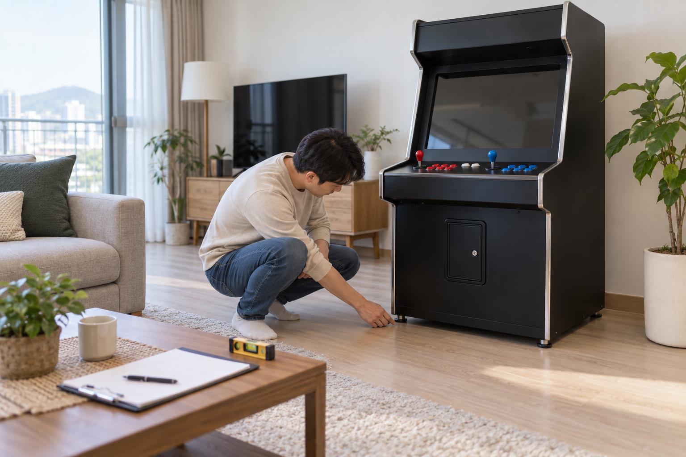
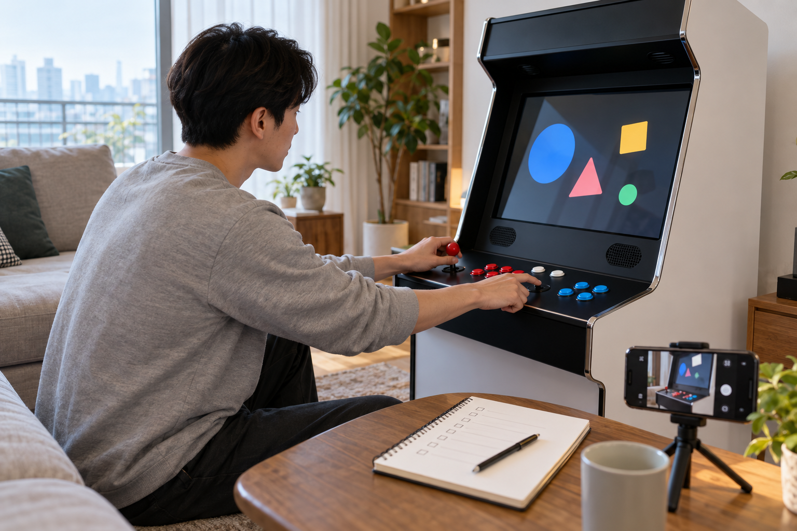

오락기 설치 뒤에는 바로 오래 플레이하기보다 외관과 흔들림, 주문한 구성품이 맞는지 먼저 확인하세요. 그다음 제품 안내에 따라 전원을 켜고 화면·소리·조작 반응을 하나씩 점검한 뒤, 확인 결과와 이상이 보이는 부분을 사진과 메모로 남기는 순서가 좋습니다.

외관과 설치 상태부터 살펴보세요
전원을 켜기 전에 본체 앞·옆·뒤에서 눌림이나 긁힘, 들뜬 부분이 보이지 않는지 살펴보세요. 바닥 네 지점이 안정적으로 닿는지, 조작할 때 본체가 흔들리지 않는지 확인하되 임의로 본체를 열거나 무거운 기기를 혼자 기울이지 마세요. 벽과 가구, 문을 여닫는 범위와 전원선 동선도 설치 전에 정한 위치와 같은지 다시 확인하세요.
설치 직후에는 전원보다 먼저 외관과 바닥 접촉, 주변 여유 공간을 확인해야 합니다.
배송 전 준비 과정은 가정용 오락기 배송 전에 준비할 것에서 이어서 볼 수 있습니다.
주문 내역과 구성품을 다시 맞춰보세요
주문 내역의 제품명과 옵션을 보고 본체, 전원선, 연결선과 안내된 액세서리가 실제로 도착했는지 대조하세요. 노리박스 공개 제품 목록에는 ‘노리박스 전용 오락기열쇠’, ‘노리박스 오락기용 220V 전원케이블’, ‘노리박스 무선 분리형 조이스틱 세트 PC지원’이 각각 별도 상품으로 안내되어 있어, 비슷해 보이는 부품이 모든 제품의 기본 구성이라고 가정하면 안 됩니다. 용도를 모르는 부품이나 빠진 것으로 보이는 구성품이 있다면 임의로 연결하지 말고 정확한 제품명과 사진을 함께 판매자에게 전달하세요.
구성품 점검은 주문한 제품명과 옵션을 기준으로 하나씩 대조해야 합니다.
- 주문 내역의 제품명과 선택 옵션
- 안내된 본체·전원선·연결선의 수량
- 별도 구매한 액세서리와 기본 구성의 구분
- 포장 안에 남은 작은 부품과 안내 문서

화면·소리·조작을 나누어 확인하세요
가정용 오락기 전원 연결 확인 순서에 따라 연결 상태를 확인한 뒤 제품 안내 순서대로 전원을 켜세요. 화면이 표시되는지, 소리가 나오는지, 조이스틱의 각 방향과 버튼이 반응하는지를 한 항목씩 확인하고 한꺼번에 여러 설정을 바꾸지 마세요. 특정 화면이나 조작에서만 문제가 나타나면 그때의 게임 이름, 화면 상태와 누른 버튼을 기록해 두는 편이 좋습니다.
초기 기능 점검은 화면·소리·조작을 분리해 확인해야 이상이 생긴 단계를 설명하기 쉽습니다.
확인 결과와 주문 정보를 함께 보관하세요
전체 외관, 제품명이 보이는 부분, 연결 상태와 첫 화면을 사진으로 남기고 점검한 날짜와 결과를 간단히 적어 두세요. 이상이 있다면 반복해서 전원을 켜거나 부품을 분해하기보다 주문 번호, 제품명, 증상이 나타난 순서와 사진·영상을 정리해 판매자에게 문의하세요. 초기 확인과 구성품 대조가 끝나기 전에는 상자와 완충재의 제품 표시를 바로 버리지 말고 판매자 안내를 먼저 확인하는 편이 좋습니다.
주문 정보와 첫 점검 기록을 함께 보관하면 문의할 때 같은 제품과 상태를 정확히 전달하기 쉽습니다.
노리박스 오락실게임기와 관련 제품은 제품자세히보기에서 확인하고, 구성품이나 초기 상태가 주문 내용과 다르면 연락하기에서 제품명과 점검 결과를 함께 알려 주세요.